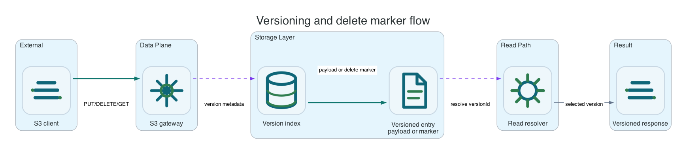

Versioning And Delete Markers
Versioning is configured with the standard S3 API. Object Lock buckets keep versioning enabled.
Common AWS CLI setup
Run this once for the target bucket. Replace li9-s3-runtime and app-data with your namespace and S3Bucket resource name.
export NS=li9-s3-runtime
export BUCKET_CR=app-data
export BUCKET="$(oc -n "$NS" get s3bucket "$BUCKET_CR" -o jsonpath='{.status.bucketName}')"
export SECRET="$(oc -n "$NS" get s3bucket "$BUCKET_CR" -o jsonpath='{.status.secretName}')"
export ENDPOINT="$(oc -n "$NS" get secret "$SECRET" -o jsonpath='{.data.AWS_ENDPOINT_URL}' | base64 -d)"
export AWS_ACCESS_KEY_ID="$(oc -n "$NS" get secret "$SECRET" -o jsonpath='{.data.AWS_ACCESS_KEY_ID}' | base64 -d)"
export AWS_SECRET_ACCESS_KEY="$(oc -n "$NS" get secret "$SECRET" -o jsonpath='{.data.AWS_SECRET_ACCESS_KEY}' | base64 -d)"
export AWS_REGION="$(oc -n "$NS" get secret "$SECRET" -o jsonpath='{.data.AWS_REGION}' 2>/dev/null | base64 -d || true)"
export AWS_REGION="${AWS_REGION:-us-east-1}"
export AWS_EC2_METADATA_DISABLED=true
li9s3() {
aws --endpoint-url "$ENDPOINT" --region "$AWS_REGION" --no-verify-ssl s3api "$@"
}To verify the setup, run:
li9s3 head-bucket --bucket "$BUCKET"
li9s3 list-objects-v2 --bucket "$BUCKET" --max-keys 1Versioning And Delete Markers
Versioning is configured with the standard S3 API and is required for Object Lock buckets. Li9 S3 stores generated version IDs, delete markers, explicit version reads, version listing, explicit version deletes, and per-version tags in the metadata plane. Delete markers hide the current key without deleting protected historical versions.

| Operation | Behavior | Important Check |
|---|---|---|
| Put object | Returns a version ID when versioning is enabled. | Capture VersionId for rollback or retention tests. |
| Delete without version ID | Creates a delete marker on enabled buckets. | List versions and confirm the previous object remains readable by version ID. |
| Delete explicit version | Requires version-specific delete authorization. | Denied members in batch delete return per-key errors. |
| Read explicit delete marker | Returns AWS-style 405 MethodNotAllowed metadata for body reads. | Use explicit delete-marker removal to restore the previous latest object. |
li9s3 put-bucket-versioning --bucket "$BUCKET" --versioning-configuration Status=Enabled
printf 'v1\n' > /tmp/versioned.txt
V1="$(li9s3 put-object --bucket "$BUCKET" --key versioned/item.txt --body /tmp/versioned.txt --query VersionId --output text)"
printf 'v2\n' > /tmp/versioned.txt
V2="$(li9s3 put-object --bucket "$BUCKET" --key versioned/item.txt --body /tmp/versioned.txt --query VersionId --output text)"
li9s3 list-object-versions --bucket "$BUCKET" --prefix versioned/item.txt
li9s3 get-object --bucket "$BUCKET" --key versioned/item.txt --version-id "$V1" /tmp/versioned-v1.txt
li9s3 delete-object --bucket "$BUCKET" --key versioned/item.txt
li9s3 list-object-versions --bucket "$BUCKET" --prefix versioned/item.txt
cat /tmp/versioned-v1.txtSuspended Buckets
Suspended versioning uses S3-compatible null version behavior for the covered write, delete, and list paths. Do not use suspension as a retention control; use Object Lock when immutability is required and lifecycle rules when cleanup is required.